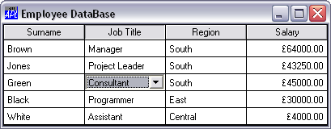
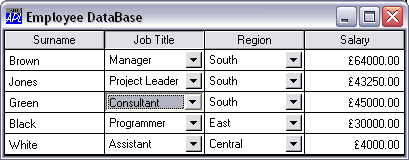
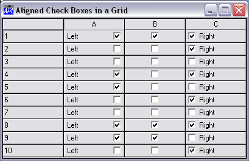

The Grid can display the value in a cell directly (as in Fig 7.1) or indirectly via an associated object. You do not (as you might first expect) define input and validation characteristics for the cells directly, instead you do so indirectly through associated objects. Objects are associated with Grid cells by the Input property. If a cell has an associated object, its value is displayed and edited using that object. Several types of object may be associated with Grid cells, including Edit, Label, Button (Push, Radio and Check), and Combo objects. You can use a single associated object for the entire Grid, or you can associate different objects with individual cells.
Edit and Label objects impose formatting on the cells with which they are associated according to the values of their FieldType and Decimal properties (for numbers, dates and time) and their Justify property (for text). In addition, Label objects protect cells (because a Label has no input mechanism), while Edit objects impose input validation. If you use an Edit object with a FieldType of Numeric, the user may only enter numbers into the corresponding cells of the Grid. For both Edit and Label objects, the FieldType and Decimals properties of the object are used to format the data displayed in the corresponding cells of the Grid. For example, if the FieldType property of the associated object is Date, the numeric elements in Values will be displayed as dates.
Numeric cells may also be formatted using the FormatString property which applies ⎕FMT format specifications to the data. The AlignChar property permits formatted data to be aligned in a column. For example, you can specify that numbers in a column are aligned on their decimal points.
Combo objects can be used to allow the user to select a cell value from a set of alternatives. Radio and Check Buttons may be used to display and edit Boolean values.
Associated Edit, Label and Combo objects may be external to the Grid (for example, you can have the user type values into a companion edit field) or they may be internal. Internal objects (which are implemented as children of the Grid) float from cell to cell and allow the data to be changed in-situ. Button, Spinner and TrackBar objects may only be internal.
If the Edit object specified by Input is owned by (i.e. is a child of) the Grid itself, the Edit object floats from cell to cell as the user moves around the Grid. For example, if the user clicks on the cell addressed by row 4, column 3, the Edit object is automatically moved to that location and the data in that cell is copied into it ready for editing. When the user moves the focus away from this cell, the data in the Edit object is copied back into it (and into the corresponding element of the Values property) before the Edit object is moved away to the new cell location. This mechanism provides in-situ editing. Continuing the example illustrated in Figure 7.1, in-situ editing could be achieved as follows:
'Test.G.ED' ⎕WC 'Edit' ('FieldType' 'Numeric')
'Test.G' ⎕WS 'Input' 'Test.G.ED'In-situ editing provides two input modes; Scroll and InCell. In Scroll mode the cursor keys move from one cell to another. In InCell mode, the cursor keys move the cursor a character at a time within the cell; to switch to a new cell, the user must press the Tab key or use the mouse. The InputMode property allows you to control the input mode directly or to allow the user to switch from one to another. In the latter case, the user does so by pressing a key defined by the InputModeKey property or by double-clicking the left mouse button.
A different style of editing may be provided by specifying the name of an external Edit object that you have created. This can be any Edit object you wish to use; it need not even be owned by the same Form as the Grid. In this case, the Edit object remains stationary (wherever you have positioned it), but as the user moves the focus from cell to cell, the cell contents are copied into it and made available for editing. The current cell is identified by a thick border. When the user shifts the focus , the data is copied out from the Edit object into the corresponding cell before data in the newly selected one is copied in. Continuing the example illustrated in Figure 7.1, external editing could be achieved as follows:
'Test.ED' ⎕WC 'Edit' ('FieldType' 'Numeric')
'Test.G' ⎕WS 'Input' 'Test.ED'If Input specifies a Label object, it too may either be a child of the Grid or an external Label. A Label is useful to format cell data (through its FieldType property) and to protect cells from being changed
If the Label is a child of the Grid, it floats from cell to cell in the same way as a floating Edit object. However, unlike the situation with other objects, the row and column titles are not indented to help identify the current cell. If the Label is borderless (which is the default) and has the same font and colour characteristics of the cells themselves, the user will receive no visual feedback when a corresponding cell is addressed, even though the current cell (reflected by the CurCell property) does in fact change. Therefore, if you want to protect the data by using a Label and you want the user to be able to identify the current cell, you should give the Label a border, a special colour scheme or a special font.
A Combo object is used to present a list of choices for a cell. Although you may use an external Combo, internal Combos are more suitable for most applications. If different cells have different sets of choices, you can create several Combo objects, each with its own set of Items and associate different cells with different Combos through the CellTypes property. Alternatively, you can use a single Combo and change Items dynamically from a callback on the CellMove event. In all cases, the value in the cell corresponds to the Text property of the Combo.
If you use a floating Combo, the appearance of the non-current cells depends upon the value of the ShowInput property. If ShowInput is 0 (the default), the non-current cells are drawn in the standard way as if there were no associated input object. If ShowInput is 1, the non-current cells are given the appearance of a Combo, although the system does not actually use Combos to do so. Furthermore, there is a subtle difference in behaviour. If ShowInput is 0, the user must click twice to change a value; once to position the Combo on the new cell and again to drop its list box. If ShowInput is 1, the user may drop the list box with a single click on the cell.
Note that ShowInput may be a scalar that applies to the whole Grid, or a vector whose elements applies to different cells through the CellType property.
The following Grid uses two internal Combo objects for the Job Title and Region columns, but with ShowInput set to 0. Only the current cell has Combo appearance.
∇ Employees;Surname;JobTitle;Region;Salary;DATA;Jobs;Regions
[1] 'F'⎕WC'Form' ''('Size' 126 401)('Coord' 'Pixel')
[2] F.Caption←'Employee DataBase'
[3] Surname←'Brown' 'Jones' 'Green' 'Black' 'White'
[4] JobTitle←'Manager' 'Project Leader' 'Consultant'
[5] JobTitle,←'Programmer' 'Assistant'
[6] Region←'South' 'South' 'South' 'East' 'Central'
[7] Salary←64000 43250 45000 30000 4000
[8] DATA←↑[0.5]Surname JobTitle Region Salary
[9] 'F.G'⎕WC'Grid'DATA(0 0)F.Size
[10] Jobs←JobTitle
[11] Regions←'North' 'South' 'East' 'West' 'Central'
[12] 'F.G.JobTitle'⎕WC'Combo'Jobs
[13] 'F.G.Region'⎕WC'Combo'Regions
[14] 'F.G.Salary'⎕WC'Label'('FieldType' 'Currency')
[15] F.G.Input←'' 'F.G.JobTitle' 'F.G.Regions' 'F.G.Salary'
[16] F.G.CellTypes←(⍴F.G.Values)⍴1 2 3 4
[17] F.G.TitleWidth←0
[18] F.G.ColTitles←'Surname' 'Job Title' 'Region' 'Salary'
∇

The same Grid with ShowInput set to 1 is illustrated below. In this case, all of the cells associated with Combo objects have Combo appearance.
F.G.ShowInput
0
F.G.ShowInput←1

Radio and Check Buttons behave in a similar way to Combo objects except that they may only be used internally. The value in the cell associated with the Button must be 0 or 1 and corresponds to the Button’s State property. The value is toggled by clicking the Button.
If ShowInput is 0, the user must click twice to change a value; once to position the (floating) Button on the cell, and a second time to toggle its state. If ShowInput is 1, the user may change cell values directly with a single click. Note that this may be undesirable in certain applications because the user cannot click on a cell without changing its value.
By default, the value of the EdgeStyle property for a Radio or Check Button which is created as the child of a Grid is 'None', so you must set EdgeStyle explicitly to 'Plinth' if a 3-dimensional appearance is required.
You can refine the appearance of the Radio or Check Button using its Align property. This may be set to 'Left', 'Right' or 'Centre' (and 'Center'). The latter causes the symbol part of the Button (the circle or checkbox) to be centred within the corresponding Grid cell(s) but should only be used if the Caption property is empty.
The following illustrates different values for the Align property using Check Buttons.
∇ AlignedCheckBoxes;CStyle
[1] 'F'⎕WC'Form' 'Aligned Check Boxes in a Grid'
[2] 'F.G'⎕WC'Grid'(¯1+?10 3⍴2)(0 0)(100 100)('ShowInput' 1)
[3] CStyle←('Style' 'Check')('EdgeStyle' 'Plinth')
[4] 'F.G.C1'⎕WC'Button' 'Left',CStyle,('Align' 'Left')
[5] 'F.G.C2'⎕WC'Button' '',CStyle,('Align' 'Centre')
[6] 'F.G.C3'⎕WC'Button' 'Right',CStyle,('Align' 'Right')
[7]
[8] 'F.G'⎕WS'Input'('F.G.C1' 'F.G.C2' 'F.G.C3')
[9] 'F.G'⎕WS'CellTypes'(10 3⍴1 2 3)
∇
